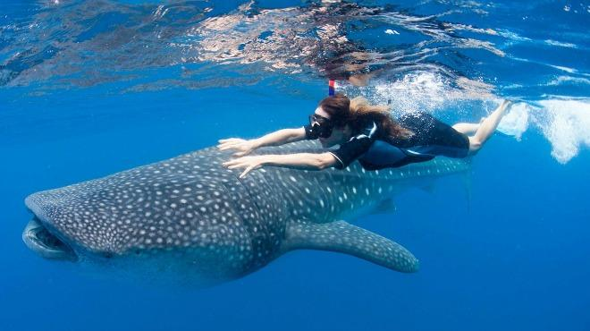
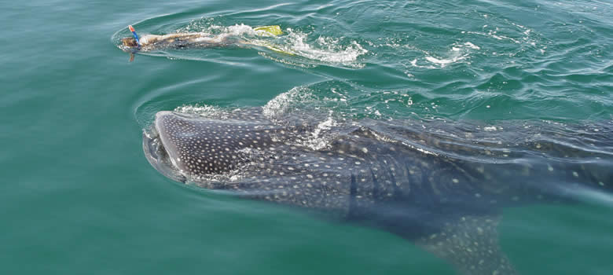
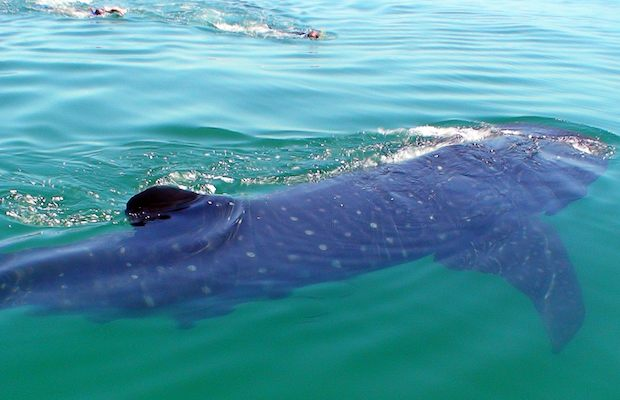

Cautiverio

En 2008, durante la 2a. Conferencia Internacional del Tiburón Ballena, integrada por 40 países, se estableció el 30 de agosto como el Día Internacional del Tiburón Ballena, con el objetivo de difundir su conocimiento y conservación alrededor del planeta.
Por ello y en el marco de esta efeméride, es importante hablar de la Reserva de la Biosfera del Tiburón Ballena, que alberga y protege a esta especie (Rhincodon typus) en México. Establecida en Quintana Roo en el año 2009, la reserva se localiza en las costas del norte de la entidad, volviéndola estratégica para la protección de este animal en peligro de extinción.
|  |
Este Tiburon ballena fue nombrado Juan Roberto mide 12 metros de longitud y tiene una edad de 10 años. |
|  |
Este Tiburon Ballena fue nombrado Santos fue procesado y puesto en cautiverio por una herida provocada por pescadores de la zona. |
|  |
Este tiburon ballena fue marcado con etiqueta y puesto en libertad el 2012 fue nombrado como San Juan, tiene 10 años y su longitud es de 12 metros, fue encontrado en playa del carmen. |
|
|
Por si te gustaria nadar con estos hermosos animales Ingresa aquí. tendras mas información. |
|